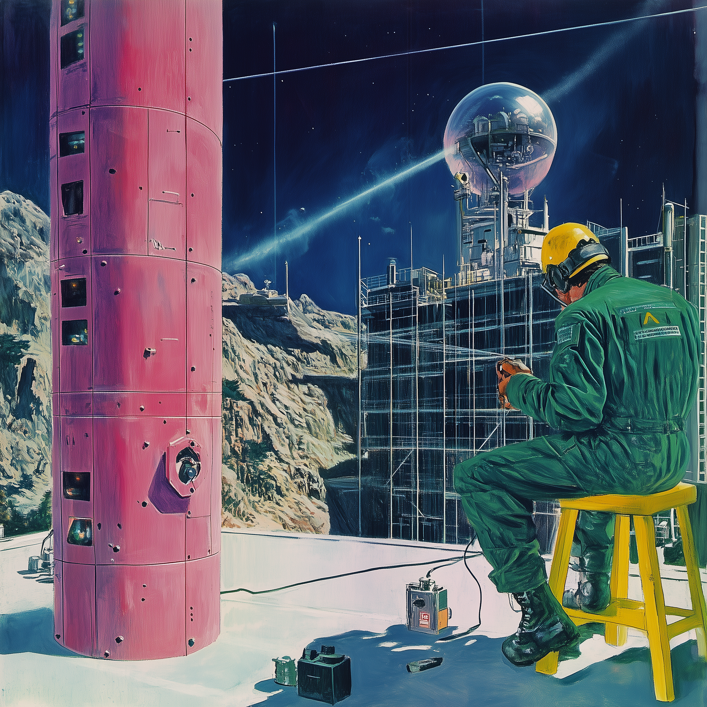
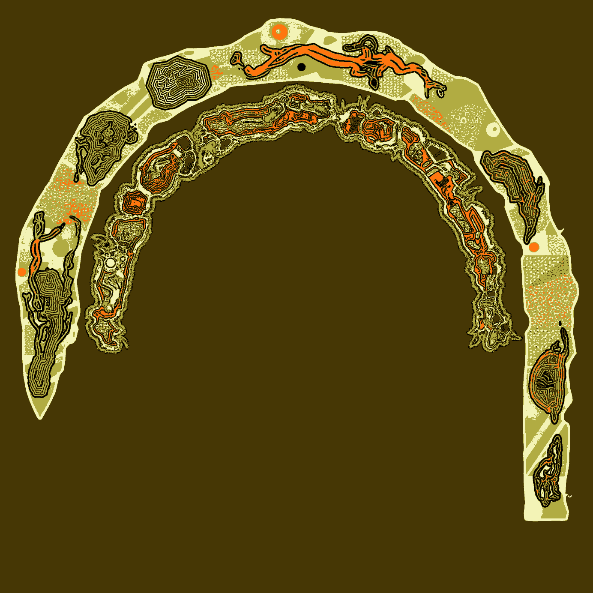
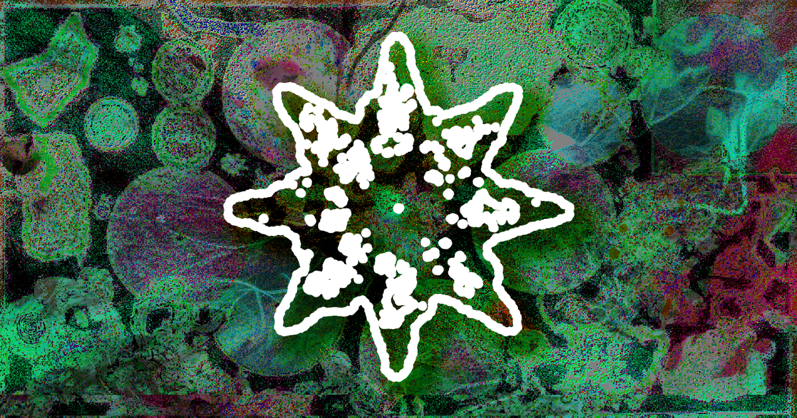
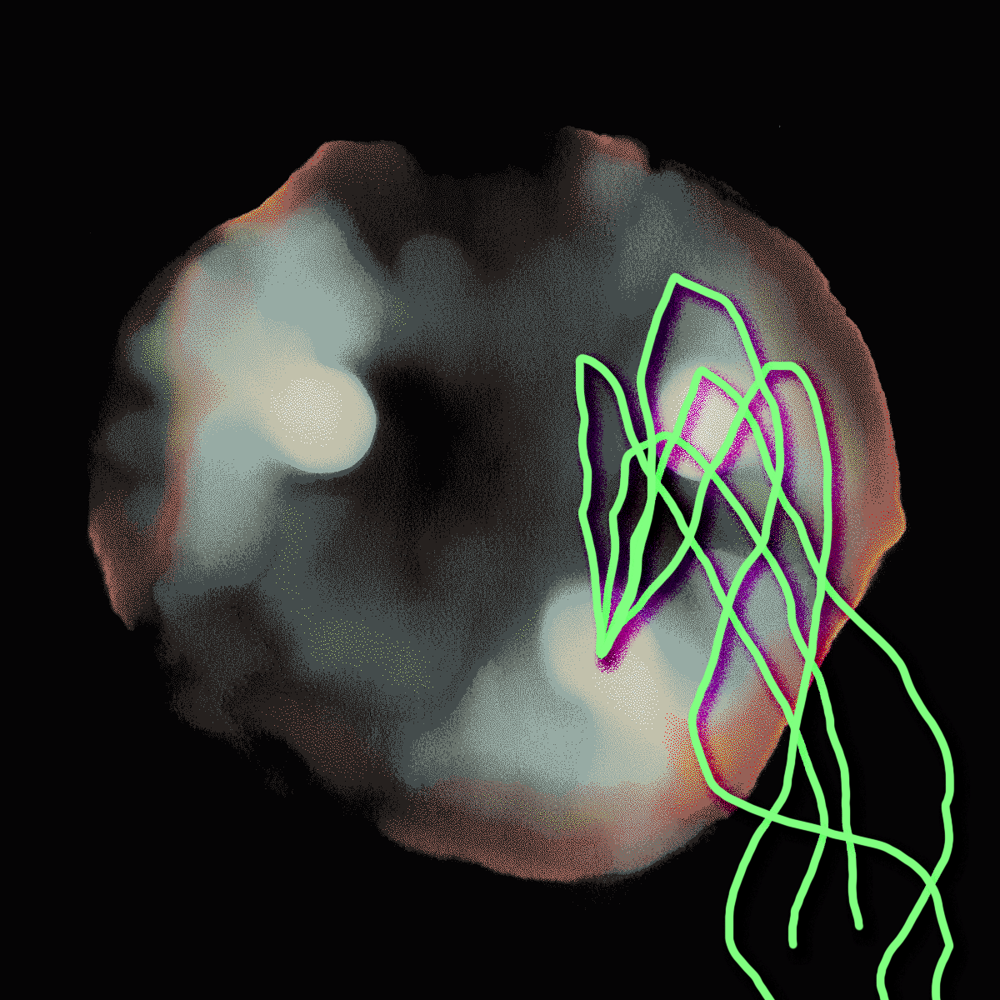

Move from ad-hoc AI use to building your first Kit — a reusable bundle of workflows, disposable apps, and contexts your team can run repeatedly and reliably. Then map a path to scale it.
Most teams "adopt AI" by buying new, mostly untested software, then wait for a productivity jump that never shows up in the numbers. That missing productivity is the signature of the stage we are actually in: the Kit phase.
Every general-purpose technology passes through it — the steam engine, the Model T, the PC. Loose components people tinker with, repurpose, and master by doing, long before anyone builds the firm-scale machinery that turns tinkering into measured output. Farmers ran corn shellers off jacked-up Model Ts for years before Ford watched them and built the tractor.
The work that matters happens in undocumented local experiments. The organizations that pull ahead recognize the stage they are in and build a map to climb out of it. AI Kitcraft is the hands-on answer.

The work that matters happens at the workbench — in undocumented local experiments, long before any institution takes notice.
Play · Kit · Practice
Every level is touched by hand. Participants Play, build a Kit, and prepare to turn it into a Practice.
A reusable workflow you built and can re-run, with its context, prompts, and steps documented.
A working grasp of the AI Capability Maturity Model — enough to locate your organization and plan the next level up.
The language and design principles of Kitcraft, plus a one-page sketch for turning your Kit into an organizational capability.
Across the symposium's two workshop days, plus asynchronous co-working on Discord. Each session runs about 60 to 90 minutes.
A history of amateur kit-making cultures — from amateur radio operators carving out regulatory space to the phone phreaks who set the stage for the desktop era — and what today's AI tinkerers can borrow from a century of amateurs who turned play into infrastructure.
Stand up your environment, assemble a basic context hub for your Kit — the bundle of goals, references, and conventions the AI works from — and deploy your first disposable application or wireframe.
Turn your disposable application into a Kit you or a teammate can run repeatedly and reliably. Opens with a short clinic on the success patterns and failure modes of AI adoption, and closes with a Kit trade.
Continue hardening your Kit. As with Session 2, it opens with a clinic on AI-adoption patterns and failure modes and closes with a Kit trade.
Each participant shows the Kit they built and shares how they might convert it into an organizational capability.
Before session 1 Participants receive a "Kitcraft Kit" — the language and design principles that guide Kit development through the working sessions. Pairs co-create a Kit around their common interests.
Analysts and managers from all backgrounds — project managers, operations and deployment leads, and AI-curious newcomers. No AI-engineering background is required, only regular chatbot use and a willingness to tinker.
Rafa researches how protocols shape organizational design, performance, and technology adoption, and co-authored the AI Capability Maturity Model — the five-level framework this workshop teaches. He runs the SIG's study group and builds the hands-on Kits participants are asked to make. He works as a general manager for blockchain governance and as an AI adoption consultant.
Sachin studies infrastructure ethnography and the social history of technology, and wrote AI, Tractors, and the Productivity Paradox — the essay that supplies this workshop's core thesis, that AI is in its Kit phase. He works as an AI adoption consultant, and previously as a product manager across several software organizations.

The five-level framework the workshop teaches. ai.protocolized.dev →
Sachin Benny, AI, Tractors, and the Productivity Paradox. Read →

New Nature · Sep 21–25 · online. Details →

An Agent-Accessible Brand Kit. See it →
Symposium registration opens in July, once the schedule is finalized. Tell us you're interested and we'll reach out with the details when it does. Workshop seats are limited to 10–15.
Arriving with a concrete recurring task and a working tooling setup moves you up the priority list.